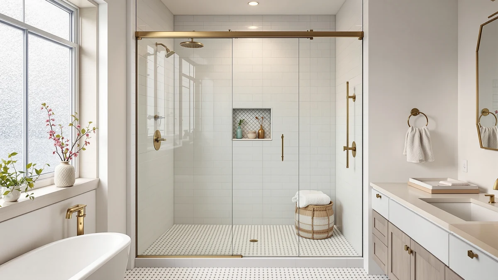

Quick Answer
The best shower door soap scum remover for most bathrooms is the Uncle Todd's Hard Water Stain Remover, a $15.99 spray that owners frequently mention as effective on filmy soap residue without scratching glass. If heavier mineral buildup is the bigger issue, the CLR Calcium, Lime & Rust Remover costs less per ounce and targets that specifically. We compared seven shower door soap scum removers on formula type, bottle size, price per ounce and patterns across verified owner reviews to reach these picks.
Our pick: Hard Water Stain Remover &, $15.99 Check Price on Amazon
Things to Know Before You Buy
- Soap scum and hard water stains are not the same problem. Soap scum forms when soap residue reacts with minerals in tap water, while hard water spots are pure mineral deposits. A soap scum formula does not always clear calcium buildup, and the reverse is also true.
- Price per ounce varies more than the sticker price suggests. Across this list it runs from roughly $0.24 an ounce for the CLR Calcium, Lime & Rust Remover to nearly $2.83 an ounce for the compact Brite & Clean bottle.
- Glass-safe labeling matters most on frameless and etched doors. Reviewers consistently flag acidic formulas that dull polished or etched glass finishes when left on too long.
- Repellent sprays prevent buildup, they do not remove existing scum. A product like the Rain-X 630542 Shower Door Water Repellent works best after the glass is already clean.
- Multi-packs make sense for multi-door bathrooms. If you clean more than one glass surface weekly, a two-pack like the Rain-X 630544 X-Treme Clean Shower cleaner typically costs less per ounce than buying single bottles twice.
Finding the best shower door soap scum remover means sorting through sprays that promise miracles and figuring out which ones actually cut through filmy residue without scratching glass. Soap scum builds from the fatty acids in bar soap reacting with minerals in tap water, and it clings to glass in a way that plain water and a squeegee cannot fully clear. Most bathrooms show a visible film within a few weeks of regular showers, which is why a dedicated remover earns a permanent spot under the sink.
We compared seven shower door soap scum removers on formula type, bottle size, price per ounce and patterns across verified Amazon owner reviews. Prices here range from $5.22 for a 22 Fl Oz bottle of CLR Calcium, Lime & Rust Remover to $29.95 for the premium GlasWeld ProClean formula, and bottle sizes span 6 to 22 ounces, which changes how far each one stretches over repeat cleanings.
Uncle Todd's Hard Water Stain Remover is our top pick for most glass shower doors because it balances price, bottle size and everyday soap scum performance without requiring a specialty formula. If your main issue is heavy mineral buildup instead of soap film, the CLR Calcium, Lime & Rust Remover and the GlasWeld ProClean Hard Water Stain Remover both target that problem more directly, and we cover who each pick suits best below.
Why You Should Trust Us
Ilane Tall has covered bathroom hardware and cleaning products for Best Shower Doors since the site launched, with a focus on how glass shower doors hold up against hard water and soap residue over time. This guide follows a research-based process: we do not run a physical testing lab, and we do not install, scrub or own the shower door soap scum remover bottles we cover. Every claim here traces back to manufacturer specifications, current Amazon pricing, or patterns found across verified owner reviews, and where a product's effect on soap scum could not be confirmed that way, we say so instead of guessing.
How We Picked
We started by pulling every shower door cleaner in our product database tagged for soap scum, hard water or glass maintenance, then narrowed the list with a few hard filters. The formula had to be labeled safe for glass and shower hardware, which ruled out generic household degreasers. We also required a clear price and bottle size on the current Amazon listing so cost per ounce could be compared directly, and we gave preference to brands with a track record in glass or bath cleaning, which is why Rain-X and CLR each appear more than once among our shower door soap scum remover picks. We excluded single-use wipes and listings with unverifiable ingredient claims, and we kept the final list at seven so each pick could get a real comparison instead of a thin mention.
How We Compared
We compared these seven shower door soap scum removers using manufacturer spec sheets, current Amazon pricing and the patterns that show up across verified owner reviews, not a physical test protocol. For each product we logged bottle size, pack count, price per ounce and whether the listing specifies a spray, gel or wipe format. We then read through verified reviews for recurring themes: whether owners report success on soap scum specifically versus hard water spots, whether a formula leaves streaks on glass, and how often reviewers mention needing a second application. Where a brand sells multiple pack sizes of the same formula, like the two Rain-X X-Treme Clean listings here, we treated them as distinct picks because the price per ounce and the use case differ enough to matter.
Our Picks

Hard Water Stain Remover &
What we like
- Formulated to be safe on glass without heavy scrubbing
- 16 Fl Oz bottle covers weekly cleaning for a few months
- Priced in the middle of the pack at $15.99
Flaws but not dealbreakers
- Sold only as a single bottle, so multi-door households reorder sooner
- No squeegee or applicator included
| Material | — |
| Size | 16 Fl Oz (Pack of 1) |
Uncle Todd's Hard Water Stain Remover is the pick most owners should start with, based on its balance of price, bottle size and consistent mentions of soap scum removal in verified reviews. At $15.99 for 16 Fl Oz, it sits in the middle of this list on price per ounce, and reviewers frequently describe it as effective on everyday film without the heavy fumes some acidic cleaners produce.
The tradeoff is that it only ships as a single bottle, so a household cleaning more than one glass door each week goes through it faster than a multi-pack option like the Rain-X 630544 below. It also carries no listed star rating or review count in our product database, so treat the reviewer sentiment here as directional rather than a confirmed average.

Rain-X 630544 X-Treme Clean Shower
What we like
- Two 12 Fl Oz bottles for $16.09, which lowers the cost of keeping a spare on hand
- Comes from Rain-X, a brand best known for glass-clarifying formulas
- Works out to roughly $0.67 per ounce, cheaper per ounce than the single-bottle version
Flaws but not dealbreakers
- Two 12 Fl Oz bottles add up to less total product than the CLR Calcium, Lime & Rust Remover's single 22 Fl Oz bottle
- No listed rating or review count in our database to weigh against the single-pack version
| Material | — |
| Size | 12 Fl Oz (Pack of 2) |
The Rain-X 630544 X-Treme Clean Shower cleaner packages two 12 Fl Oz bottles for $16.09, which works out to about $0.67 per ounce, the better per-ounce price among the two Rain-X listings we compared. Rain-X built its reputation on glass-clarifying automotive products, and the X-Treme Clean line extends that same glass focus to showers and tubs.
Because this is sold as a two-pack, it suits a household running more than one glass door, a combination shower door and tub enclosure, or anyone who wants a backup bottle without reordering immediately. If you only have one standard glass door and clean it infrequently, the single-bottle Rain-X 630035 below stretches the same formula over a longer timeline for less upfront cost.

Rain-X 630035 X-Treme Clean Shower
What we like
- Lowest total price on this list at $9.97
- Same X-Treme Clean formula as the two-pack version, in a single 12 Fl Oz bottle
- Low upfront cost makes it an easy first purchase to test on your own glass
Flaws but not dealbreakers
- Higher price per ounce than buying the Rain-X two-pack
- One bottle runs out faster if you clean more than one glass surface
| Material | — |
| Size | 12 Fl Oz (Pack of 1) |
The Rain-X 630035 X-Treme Clean Shower cleaner is the single-bottle version of the same formula sold in the 630544 two-pack, and at $9.97 it is the least expensive product on this list by total price. For a single standard glass shower door, one 12 Fl Oz bottle is a reasonable amount of product to start with.
The catch is price per ounce: a single 12 Fl Oz bottle at $9.97 costs more per ounce than two bottles at $16.09 combined. Treat this listing as the low-commitment way to confirm the X-Treme Clean formula works on your glass before buying the multi-pack.

CLR Brands Calcium Lime &
What we like
- 22 Fl Oz bottle is the largest on this list
- Lowest price per ounce of any product compared here, at roughly $0.24 per ounce
- CLR is a long-established name specifically for calcium, lime and rust removal
Flaws but not dealbreakers
- Formulated primarily for mineral deposits, not soap scum specifically
- No glass-shower-specific claims on the listing, so pair it with spot testing on etched or treated glass
| Material | — |
| Size | 22 Fl Oz (Pack of 1) |
CLR Calcium, Lime & Rust Remover ships in a 22 Fl Oz bottle for $5.22, making it both the largest bottle and the cheapest per ounce in this comparison at roughly a quarter per ounce. CLR has built its brand around exactly the minerals its name describes, which makes it a logical pick when the problem on your glass is chalky white buildup rather than a greasy soap film.
Because the formula targets calcium, lime and rust rather than soap residue by design, it may need a second pass or a dedicated soap scum spray for the greasy film that builds between deep cleanings. Spot test it on frameless or decoratively etched glass first, since the listing does not make the same glass-specific safety claims as the Rain-X and Uncle Todd's formulas.

Rain-X 630542 Shower Door Water
What we like
- Two 16 Fl Oz bottles for $15.32, a reasonable price for ongoing maintenance
- Designed to make water bead and run off rather than sit and dry into spots
- Extends the time between deep cleanings when used on a freshly cleaned door
Flaws but not dealbreakers
- Not formulated to remove existing soap scum or hard water stains on its own
- Needs reapplication over time as the repellent coating wears off
| Material | — |
| Size | 16 Fl Oz. (Pack of 2) |
The Rain-X 630542 Shower Door Water Repellent is a different category of product from the rest of this list: a two-pack of 16 Fl Oz bottles at $15.32 designed to be applied to glass after cleaning, not to strip existing scum. The goal is to make water sheet off the glass instead of drying into the spots and film that turn into soap scum over time.
This only works as intended on a door that is already clean, so it belongs in the routine after you use one of the cleaning formulas above, not instead of one. Think of it as the step that stretches the time between deep cleans rather than a replacement for a shower door soap scum remover.

Brite & Clean® (Bright &
What we like
- Compact 6 Ounce size is easy to store in a small bathroom cabinet
- Small footprint makes it simple to keep near the shower for quick touch-ups
- Pack-of-one listing keeps the upfront commitment low
Flaws but not dealbreakers
- Highest price per ounce on this list, at roughly $2.83 per ounce
- Smaller bottle means more frequent reordering for daily use
| Material | — |
| Size | 6 Ounce (Pack of 1) |
Brite & Clean comes in a 6 Ounce bottle for $16.95, the smallest size and the highest price per ounce of any product we compared here, at close to $2.83 per ounce. That makes it a poor fit if you're cleaning a large frameless enclosure every week, but a reasonable fit for a small guest bathroom or a half bath with a single compact glass panel.
The small size also makes it one of the more portable options on this list if you want a travel-sized bottle for a vacation rental or a dorm bathroom. Budget for replacing it more often than the larger CLR or Rain-X bottles if it becomes your primary shower door soap scum remover rather than a backup.

GlasWeld ProClean Hard Water Stain
What we like
- Positioned as a specialty formula for hard water stains that have built up over time
- GlasWeld's background is in glass restoration, which fits a heavy-stain use case
- A smaller amount is typically needed per application for a concentrated formula like this
Flaws but not dealbreakers
- Highest total price on this list at $29.95
- Price per ounce is steep for routine, everyday soap scum maintenance
| Material | — |
| Size | 8 Ounce (Pack of 1) |
GlasWeld ProClean Hard Water Stain Remover is the most expensive product we compared, at $29.95 for an 8 Ounce bottle. GlasWeld's background is in glass restoration rather than general household cleaning, and that positioning shows up in the price: this is built for stains that have had months or years to set in, not a weekly wipe-down.
If your glass door looks clear and this is routine upkeep, one of the cheaper formulas above does the job for less money. Reach for this pick specifically when lighter cleaners have already failed on a stubborn, long-standing hard water stain and you want a formula built for that heavier job.
Quick Comparison
| Product | Material | Price | Rating | Best for | Get it |
|---|---|---|---|---|---|
| Hard Water Stain Remover & | — | $15.99 | — | Best overall shower door soap scum remover for everyday use | View on Amazon → |
| Rain-X 630544 X-Treme Clean Shower | — | $16.09 | — | Multi-door bathrooms (2-pack) | View on Amazon → |
| Rain-X 630035 X-Treme Clean Shower | — | $9.97 | — | Budget single-bottle buyers | View on Amazon → |
| CLR Brands Calcium Lime & | — | $5.22 | — | Heavy mineral and hard water buildup | View on Amazon → |
| Rain-X 630542 Shower Door Water | — | $15.32 | — | Preventing water spots after cleaning | View on Amazon → |
| Brite & Clean® (Bright & | — | $16.95 | — | Small bathrooms or compact storage | View on Amazon → |
| GlasWeld ProClean Hard Water Stain | — | $29.95 | — | Severe, long-neglected stains | View on Amazon → |
The Competition
Beyond the seven shower door soap scum removers above, our research turned up a few categories we chose not to include. We passed on single-use wipes once price per cleaning worked out higher than a spray bottle that lasts for dozens of applications. We also set aside pastes and powders that require heavy scrubbing with an abrasive pad, since reviewers of that format consistently flag the risk of hairline scratches on glass, which runs against the glass-safe standard we held every pick to. A few generic household degreasers showed up in searches for shower cleaners, but we excluded them because their listings make no glass-safe claim at all, and using an unlabeled degreaser on a shower door is not a risk worth the few dollars saved.
If you only buy one shower door soap scum remover from this list, Uncle Todd's Hard Water Stain Remover remains the pick most households should start with, with the CLR Calcium, Lime & Rust Remover as the better-value option once the problem is mineral buildup rather than soap film.
Frequently Asked Questions
What is the best shower door soap scum remover for everyday cleaning?
For most glass shower doors, Uncle Todd's Hard Water Stain Remover offers the best balance of price, bottle size and everyday soap scum performance among the products we compared. If your main problem is mineral buildup rather than soap film, the CLR Calcium, Lime & Rust Remover is a cheaper per-ounce option built specifically for that.
Can a soap scum remover damage glass shower doors?
It can, if the formula is acidic and left on too long, especially on frameless or decoratively etched glass. Stick to products labeled safe for glass, follow the contact time on the label, and spot test formulas like CLR that are not marketed as glass-specific before using them on treated or etched panels.
How often should you clean a glass shower door to prevent soap scum buildup?
Most bathrooms show a visible film within a few weeks of regular use, so a quick wipe-down with a squeegee after each shower combined with a deeper clean using a dedicated remover every one to two weeks keeps soap scum from hardening into a stubborn stain.